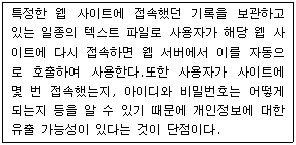
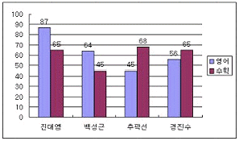
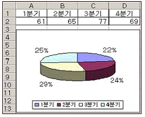
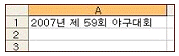
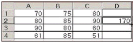

컴퓨터활용능력-3급(폐지) (2007-10-07 기출문제)
1과목: 컴퓨터 일반
1. 압축 프로그램은 컴퓨터에서 디스크 공간의 효율성을 높이고 전송 속도를 빠르게 하는 유틸리티로 기본적인 프로그램이 되었다. 다음 중 압축 프로그램이 아닌 것은?
- WINZIP
- RAR
- GUI
- ARJ
(정답률: 76%)

2. 다음 중 한글 Windows XP에서 프로그램이나 파일 삭제에 대한 내용 중 옳지 않은 것은?
- 로컬 디스크상의 파일을 아무 옵션 없이 삭제하면 ‘휴지통’으로 이동한다.
- ‘휴지통’에 보관된 파일은 ‘휴지통’ 내에서 삭제되지 않는 한 원래 상태로 복구할 수 있다.
- ‘프로그램 추가/제거’를 이용하여 삭제된 프로그램을 다시 복구하려면 ‘휴지통’에서 해당 프로그램의 폴더를 복구하면 된다.
- 프로그램은 제어판의 ‘프로그램 추가/제거’ 메뉴를 이용하여 삭제한다.
(정답률: 75%)
3. 다음 중 컴퓨터의 처리 속도 단위를 빠른 순서부터 나열한 것은?
- ms - ㎲ - ns - ps
- ps - ns - ㎲ - ms
- ㎲ - ps - ms - ns
- ns - ms - ps - ㎲
(정답률: 83%)
4. 다음 중 인터넷 주소에 대한 설명으로 틀린 것은?
- go는 비영리기관, 기타 기관에 부여한다.
- IP 주소는 인터넷에 연결된 컴퓨터를 다른 컴퓨터와 구분하기 위해 각 컴퓨터마다 고유하게 부여하는 번호이다.
- 도메인 이름을 관리하고 IP 주소로 변환하는 시스템을 DNS라 한다.
- co는 기업이나 회사 등 상업적 목적의 기관에 부여한다.
(정답률: 74%)
5. 한글 Windows XP의 탐색기에서 파일의 이름, 크기, 종류, 수정한 날짜 등이 파일 영역에 표시되도록 하기 위한 보기 메뉴의 선택으로 알맞은 것은?
- 큰 아이콘
- 아이콘
- 간단히
- 자세히
(정답률: 89%)
6. 다음 중 플래시 메모리에 대한 설명으로 옳지 않은 것은?
- 다른 디스크 드라이브 장치들보다 적은 소비 전력을 사용한다.
- 약한 충격에도 쉽게 고장 나므로 데이터의 안정성이 떨어진다.
- 비휘발성 메모리로서 전원이 공급되지 않아도 작성된 내용이 지워지지 않는다.
- MP3 플레이어, 개인용 정보 단말기, 휴대전화, 디지털 카메라 등에 사용되며 플래시 램(Flash RAM) 이라고도 한다.
(정답률: 82%)
7. 여러 개의 디스크를 연결하여 마치 하나의 커다란 디스크처럼 동작하게 하는 저장 시스템은?
- 플로피 디스크
- RAID
- CD 드라이브
- DAS
(정답률: 74%)
8. 다음 중 송수신 시스템간의 원활한 통신을 위해 사용하는 약속된 규율은 무엇인가?
- 프로토콜
- 브리지
- 게이트웨이
- 허브
(정답률: 88%)
9. 다음 중 플러그 앤 플레이(plug and play)에 대한 설명으로 옳지 않은 것은?
- 컴퓨터에 주변기기를 추가할 때 별도의 물리적인 설정을 하지 않아도 설치만 하면 그대로 사용할 수 있도록 하는 기능이다.
- 플러그 앤 플레이 기능을 사용하기 위해서는 운영체제, 주변기기, 바이오스 프로그램 등에서 모두 지원할 수 있어야 한다.
- 사용자는 주변기기의 플러그 앤 플레이 지원 유무를 마이크로소프트사의 홈페이지에서 하드웨어 목록을 보고 확인할 수 있다.
- 컴퓨터에 사운드 카드 등과 같은 주변장치는 인터럽트 입/출력 주소 등을 자동적으로 조절하기 위해서 별도의 물리적인 설정을 한다.
(정답률: 60%)
10. 다음 중 텔레비전이나 전송사진 등에서 화면을 구성하고 있는 최소 단위를 의미하는 용어로 알맞은 것은?
- Bit
- Byte
- Vector
- Pixel
(정답률: 76%)
11. 한글 Windows XP의 [탐색기]에서 드라이브 아이콘을 마우스 오른쪽 버튼으로 클릭하여 [속성]을 선택할 경우 [등록 정보] 창에 대한 설명으로 옳지 않은 것은?
- [일반] 탭에서 드라이브의 이름을 변경할 수 있다.
- [일반] 탭에서 디스크의 여유 공간을 확인할 수 있고 디스크 정리를 실행할 수 있다.
- [공유] 탭에서 현재 드라이브의 공유 여부를 설정할 수 있다.
- [도구] 탭에서 드라이브의 백업 및 디스크 조각 모음, 오류 검사뿐만 아니라 디스크 드라이브 이름을 변경할 수도 있다.
(정답률: 58%)
12. 다음 중 한글 Windows XP에서 바탕 화면의 바로 가기 메뉴에서 할 수 없는 것은?
- 디스플레이 등록 정보 보기
- 아이콘 정렬
- 공유
- 새로 만들기
(정답률: 77%)
13. 자신의 컴퓨터 실력을 타인의 시스템 파괴와 정보를 절취하는 등 악의적으로 사용하는 사람을 지칭하는 용어는?
- 스토커
- 스니퍼
- 크래커
- 스푸핑
(정답률: 86%)
14. 다음 중 기억 용량의 단위가 작은 것부터 큰 순서대로 올바르게 표시된 것은?
- PB-TB-GB-MB-KB
- KB-MB-GB-TB-PB
- TB-MB-GB-KB-PB
- KB-GB-MB-TB-PB
(정답률: 89%)
15. 다음 중 원격지에 있는 컴퓨터에 접속하여 자신의 컴퓨터처럼 사용할 수 있도록 해주는 인터넷 서비스로 옳은 것은?
- Telnet
- Usenet
- FTP
- WWW
(정답률: 59%)
16. 사운드 카드를 구입하고 보니 제품 포장에 32 POLY라고 쓰여 있다. 다음 중 32 POLY가 의미하는 것은?
- 32개의 미디어 포맷을 재생할 수 있다.
- 32개의 음을 동시에 재생할 수 있다.
- 32비트 단위로 음원 파일을 처리한다.
- 녹음 시 32 Hz로 샘플링한다.
(정답률: 63%)
17. 다음 중 아래의 설명과 관련된 용어는 어느 것인가?

- 쿠키(Cookie)
- 즐겨찾기
- 고퍼(Gopher)
- 텔넷(TelNet)
(정답률: 87%)
18. 다음 중 순서도(FlowChart)를 작성하는 목적으로 옳지 않은 것은?
- 논리적인 체계를 쉽게 이해할 수 있다.
- 프로그램의 흐름에 대한 수정을 용이하게 한다.
- 컴퓨터 내부 조작 과정을 쉽게 파악할 수 있다.
- 문제 처리 과정을 논리적으로 도식한다.
(정답률: 63%)
19. 전체화면 모드에서 작업하던 중 제목 표시줄을 더블클릭하였을 때 다음 중 어떤 기능을 수행한 것과 동일한 결과가 발생하는가?
- 창 이동
- 닫기
- 최대화
- 아이콘에서 화면 복원
(정답률: 51%)
20. 한글 Windows XP에서 저장되어 있는 test.txt란 파일을 찾고자 할 때 파일 검색창에 입력할 내용으로 옳지 않은 것은?
- tes?.?
- tes?.txt
- tes*.*
- tes*.txt
(정답률: 71%)
2과목: 스프레드시트 일반
21. 다음 중 서식과 관련된 항목들에 대한 설명으로 옳지 않은 것은?
- 자동 서식 - 표 형식의 서식을 미리 만들어 놓은 서식모음으로 원하는 유형을 선택하여 적용한다.
- 조건부 서식 - 특정 조건에 맞는 셀에 서식을 적용하며 5개까지의 다중 조건이 가능하다.
- 서식 복사 - 특정 서식을 복사하여 다른 곳에 적용한다.
- 스타일 - 동일한 서식을 일관성 있게 적용할 수 있도록 한다.
(정답률: 75%)
22. 다음 중 엑셀 차트에 대한 설명으로 옳지 않은 것은?
- 워크시트의 내용을 수정하면 차트를 다시 작성해야 된다.
- 엑셀의 기본 차트 종류는 세로 막대형 차트이다.
- 엑셀에서는 2차원 차트와 3차원 차트가 제공된다.
- 데이터 테이블은 가로 막대형, 세로 막대형, 영역형, 꺾은선형 차트에 나타낼 수 있다.
(정답률: 75%)
23. 다음의 그림에서와 같이 차트 위에 데이터 값을 숫자로 표시하도록 설정하는 기능으로 옳은 것은?

- [데이터 계열 서식]의 [데이터 레이블]
- [차트 영역 서식]의 [속성]
- [범례 서식]의 [배치]
- [그림 영역 서식]의 [영역]
(정답률: 82%)
24. 다음 중 수식 ‘=INT(12.5*3)’의 결과 값으로 옳은 것은?
- 37
- 37.5
- 38
- 38.5
(정답률: 68%)
25. 인쇄 시 특정 열이나 행을 매 쪽마다 반복적으로 인쇄하고자 할 때 설정해야 하는 방법으로 옳은 것은?
- [미리 보기 옵션]에서 반복 인쇄할 열을 입력한다.
- [페이지 설정]-[시트]-[인쇄 제목]에서 반복할 행이나 열을 입력한다.
- 인쇄 옵션에서 인쇄 영역을 선택 영역으로 정한다.
- [도구]-[옵션]-[화면 표시] 탭에서 윤곽 기호를 선택한다.
(정답률: 64%)
26. 다음 중 수식의 값이 TRUE가 되는 것은?
- =(5>5)
- =(5<>5)
- =(5<=5)
- =(5<5)
(정답률: 72%)
27. 다음 차트에 대한 설명으로 옳지 않은 것은?

- 3차원이므로 Z축이 있다.
- 데이터 계열이 한 개다.
- 데이터 레이블은 전체 값에 대한 각 데이터 계열 요소의 백분율로 표시할 수 있다.
- 데이터 레이블은 실제 값으로 표시할 수 있다.
(정답률: 71%)
28. 다음 중 엑셀에서 데이터 입력에 대한 설명으로 옳지 않은 것은?
- 각 셀에 데이터를 입력하면 수식 입력 줄에 입력하는 내용이 표시된다.
- TODAY() 함수를 이용하여 오늘 날짜를 입력할 수 있다.
- 한 셀에 두 줄 이상의 문자열을 입력할 때는 [Alt]+[Enter]를 사용한다.
- 문자 데이터는 입력 후 오른쪽으로 자동 정렬되고, 숫자 데이터는 왼쪽으로 자동 정렬된다.
(정답률: 70%)
29. 다음과 같이 데이터를 [A1] 셀에 입력한 후 채우기 핸들을 이용하여 [A5] 셀까지 드래그 하였을 때 [A5] 셀의 결과 값으로 옳은 것은?

- 2007년 제 59회 야구대회
- 2011년 제 59회 야구대회
- 2007년 제 63회 야구대회
- 2011년 제 63회 야구대회
(정답률: 76%)
30. 다음 중 함수의 사용 규칙에 대한 설명으로 옳지 않은 것은?
- 인수는 반드시 소괄호 안에 기입해야 하며 함수의 인수로 다른 함수를 사용할 수도 있다.
- 문자열을 인수로 사용할 때는 문자열을 “ ” 안에 기입해야 한다.
- 인수를 여러 개 입력해야 할 경우에는 각 인수를 콤마(,)로 구분한다.
- 인수로 사용하는 숫자에 ‘천 단위 구분 기호(,)’를 사용할 수 있다.
(정답률: 53%)
31. 값에 대한 차이가 심한 다른 두 종류의 대해 한 차트에 다른 두 개의 단위로 데이터 값을 모두 나타내려면 어느 차트를 사용해야 하는가?
- 3차원 쪼개진 원형
- 이중 축 꺾은선형
- 블록 영역형
- 피라미드형
(정답률: 84%)
32. [A1] 셀에 1이 입력된 상태에서 [A5] 셀까지 연속 데이터(1, 2, 3, 4, 5)를 표시하고자 할 때 옳은 방법은?
- [A1] 셀을 선택한 뒤, 채우기 핸들로 [A5] 셀까지 드래그한다.
- [A1:A2] 셀까지 범위를 설정한 뒤, 채우기 핸들로 [A5] 셀까지 드래그한다.
- [A1] 셀을 선택한 뒤, [Ctrl] 키를 누른 채 채우기 핸들로 [A5] 셀까지 드래그한다.
- [A1:A5] 셀까지 범위를 설정한 뒤, [편집]-[채우기]-[아래 쪽]을 선택한다.
(정답률: 71%)
33. 다음 중 셀 참조에 대한 설명으로 옳지 않은 것은?
- 셀 참조를 입력한 후 다른 셀로 복사했을 때 참조하고 있는 셀의 주소가 복사된 거리만큼 자동으로 변경되는 형태의 셀을 상대참조라 한다.
- 셀 참조를 입력한 후 다른 셀로 복사해도 참조하고 있는 셀의 주소가 절대로 변경되지 않고 항상 고정되는 형태의 셀 참조를 절대참조라고 한다.
- 혼합참조는 행만 절대 참조하거나, 열만 절대 참조한다.
- 절대참조는 $A1과 같이 영문자 앞에만 $문자를 붙인다.
(정답률: 71%)
34. 다음 중 시트 이름 바꾸기에 대한 설명으로 옳지 않은 것은?
- 시트 이름에 공백을 포함하여 입력시킬 수 있다.
- 시트 이름을 더블 클릭한 후 새로운 이름을 입력한다.
- 이름에 *, /, ?등의 문자를 사용할 수 있다.
- [서식]-[시트]-[이름 바꾸기] 메뉴를 선택해 새로운 이름을 입력한다.
(정답률: 84%)
35. 아래 시트에서 [D2] 셀의 수식이 =A$2+$C2로 적혀 있었다. 이를 [D4] 셀에 복사했을 때 그 결과로 옳은 것은?

- 110
- 131
- 150
- 170
(정답률: 68%)
36. 다음 설명 중 틀린 것은?
- 셀에 [메모]를 붙일 때는 [삽입] 메뉴의 [메모]를 선택하여 원하는 메모를 입력한다.
- 셀 주소는 열 번호 [A~IV]와 행 번호 [1~65536]로 구성된다.
- 하나의 통합문서는 다양한 종류의 시트를 모두 합하여 최대 255까지 포함할 수 있다.
- [Home] 키를 누르면 현재 셀이 위치한 열의 시작 부분으로 이동된다.
(정답률: 59%)
37. ○, ☆, ※, △ 등과 같은 특수 문자를 입력하고자 한다. 다음 설명 중 옳은 것은?
- [삽입]-[셀]을 사용하여 입력한다.
- [F7] 키를 누른 후 특수문자를 선택한다.
- 한글 자음을 입력한 후 [한자]키를 눌러서 입력한다.
- 한글 자음을 입력한 후 [F9]키를 눌러서 입력한다.
(정답률: 88%)
38. 다음 중 필터 기능에 대한 설명으로 옳지 않은 것은?
- 필터 기능은 많은 양의 자료에서 설정된 조건에 맞는 자료만을 추출하여 나타내기 위한 기능이다.
- 자동 필터는 조건에 맞는 자료를 다른 곳으로 추출할 수 있다.
- 자동 필터 기능은 두 개의 열에 조건이 설정된 경우 AND 조건으로 결합된다.
- 고급 필터를 사용할 때는 먼저 조건을 시트에 입력해 두어야 한다.
(정답률: 51%)
39. 다음 중 페이지 설정의 설명으로 옳지 않은 것은?
- 용지 방향을 가로, 세로로 선택할 수 있다.
- 자동 맞춤 기능이 있다.
- 인쇄 품질을 선택할 수 있다.
- 축소는 가능하나 확대 기능은 없다.
(정답률: 69%)
40. [파일]-[인쇄] 창에서 인쇄 대상으로 적합하지 않은 것은?
- 선택한 메모
- 선택 영역
- 선택한 시트
- 전체 통합 문서
(정답률: 70%)